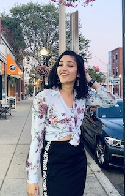
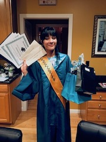

Hey, I'm Mahema.
 I'm a 3rd year Computer Science and Finance Student at Northeastern University. I'm an aspiring Software Engineer and am currently looking for co-op for Fall of 2020 from June to December. My software interests include musictech & fintech, full-stack, and working on projects with interesting data. I love working on teams that aim to create a product that has an positive impact. Over my time at university, I've become really passionate about supporting women and minorities in the tech industry.
Who am I really?
 I'm a lot of things. I grew up in Plymouth, MA - hometown of America. I come from a proud Indian family and grew up celebrating Diwali and dancing to Bollywood. Me and my sister are best friends, and my whole family is a bunch of comedians. I graduated as the Valedictorian of my high school, and entered college with high hopes. I had no prior CS knowledge before coming to NEU, and struggled a lot my first semester. Over time however, I've learned to appreciate all the late nights trying to figure out what was the difference between DFS and BFS.
Outside of work...
I have an addiction to extracurriculars.
- I'm on Kinematix Dance Troupe - Northeastern's premiere hip hop dance troupe. I'm a traditional ballet and Indian classical dancer so joining was a great new challenge.
- Currently I serve as the Vice President for Northeastern Women in Tech - an organization that I'm super passionate about.
- I'm a member of Asian Student Union and South Asian Student Union. Cultural orgs were a must for me when I came to NEU.